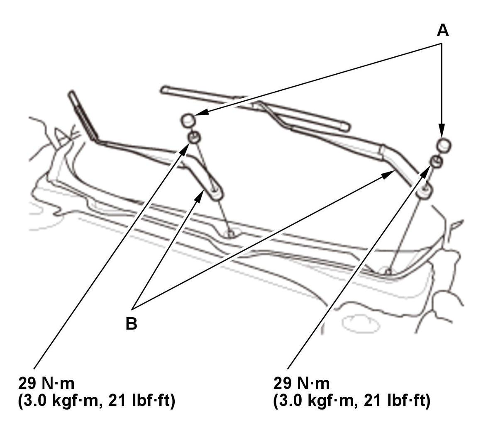

Removal and Installation
NOTE:
- Before removal and installation, turn the wiper/washer switch ON to (LO) or (HI) position, then OFF to return the motor shaft to the park position.
- Do not use the wiper/washer switch (AUTO) or (INT) position in this step.
Windshield
- Windshield Wiper Arm Assembly - Remove

Courtesy of HONDA, U.S.A., INC.1. Remove the caps (A). 2. Remove the windshield wiper arms (B).
- Windshield Wiper Blade Assembly - Remove
- All Removed Parts - Install
1. Install the parts in the reverse order of removal. - Windshield Wiper Arm/Nozzle - Adjust
Rear Window (With Rear Window Wiper)
- Rear Window Wiper Arm Assembly - Remove
1. Remove the cap (A). 2. Remove the rear window wiper arm (B).
- Rear Window Wiper Blade Assembly - Remove
- All Removed Parts - Install
1. Install the parts in the reverse order of removal. - Rear Window Wiper Arm/Nozzle - Adjust